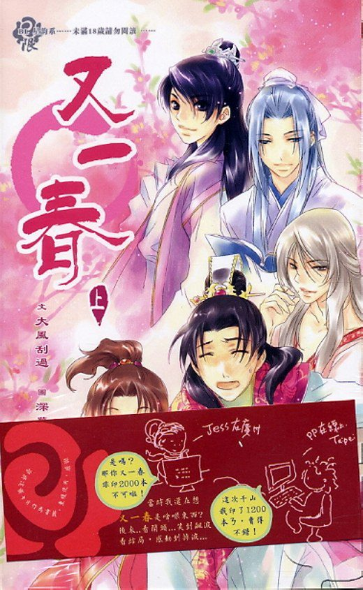

Ma Xiaodong era un joven de buen carácter, contento con su suerte en la vida. Tenía un trabajo, una novia y un coche. En esta vida, lo hizo. Un día tuvo una pelea con su novia, quien maldijo su falta de ambición, diciendo que debería caerle un rayo del cielo. Mientras conducía bajo la lluvia torrencial, ¡un rayo deslumbrante golpeó su auto!
Increíble… ¡¡los cielos deben haberse equivocado en algo!! Como compensación por el error, el emisario del inframundo le permitió transmigrar a un buen cuerpo con gran fortuna.
Así renació como un príncipe de primera clase en la antigüedad. ¿Pero qué es esto? ¿Por qué la persona que está en su cama es un hombre? ¡Esto no está bien!